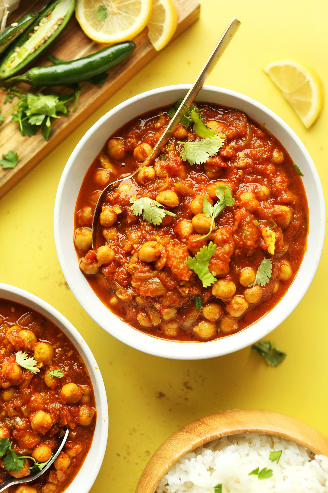

Chana Masala
Chana Masala

Ingredients
- 1 cup canned chickpeas
- 1 small onion
- 1/2 to 1 cup of oil
- 3 leveled tablespoons/25g Shan Chana Masala Mix
Steps
- Heat 4 cups of water and add chickpeas (chanas).
- Add Shan Chana Masala Mix and stir. Cover and cook on low heat for about 45 minutes until the chanas turn to a darker shade.
- Heat oil in a medium pot and fry the onion until golden. Add the chana.
- Stir fry until oil separates from the chanas.
Home